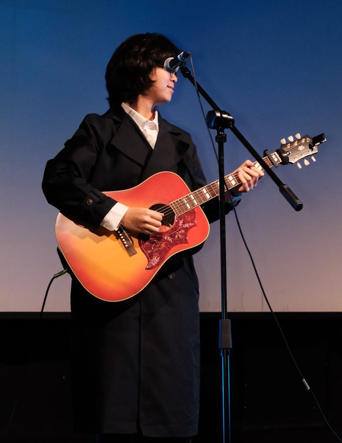

About
People tell me I have too many hobbies. Books, films, pool, cycling, travelling, taking photos, and messing around with second-hand film cameras. But if I could only keep two, it would be computers and music.
I met computers late, in my last year of high school. I took a computer science class mostly for the credits. I don't remember much of it, except one thing: a tiny Java program that drew lots to decide where to go that weekend. It was the first time something I wrote changed my actual life, and I was hooked. When I applied to university, I picked Math & CS. One I was good at, one I loved.

Music came much earlier. As a kid I sang in a well-known children's choir, with an exam every month and a cut every year. I always made it through, just. I also slowly started to hate music, and for a while I refused to sing at all.
High school fixed that too. I bought an electric guitar and started listening to rock, and music turned back into feeling instead of hitting every note in an exam. Since then I've picked up bass, drums, arranging and mixing. One day I want to put out an album of my own.
Now I'm trying to get the two to meet, starting with a tool that turns a guitar solo into playable tab.